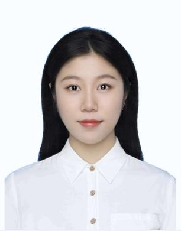

2024
AFMCT: Adaptive Fusion Module Based on Cross-Modal Transformer Block for 3D Object Detection
Machine Vision and Applications, vol. 35, no. 40
SCI
Co-author · first author is the supervisor
I work on end-to-end autonomous driving, multi-modal perception, and vision-language models for intelligent vehicles. Currently a visiting PhD student at the University of Glasgow.

I am a PhD candidate in Vehicle Engineering at the School of Automotive and Transportation Engineering, Hefei University of Technology (HFUT). From November 2025 to November 2026, I am a visiting PhD student at the James Watt School of Engineering, University of Glasgow.
My research sits at the intersection of intelligent vehicles and modern machine learning — building perception, planning and control systems that connect raw multi-sensor data to driving decisions, and increasingly, exploring how vision-language models and multi-agent systems can make these decisions more transparent and trustworthy.
I was admitted to HFUT's combined M.S.-Ph.D. program in 2021, and have worked at the Anhui Intelligent Vehicle Technology Laboratory throughout. I am a Graduate Student Member of the IEEE Robotics and Automation Society and Young Professionals.
Learning-based driving stacks that map raw sensor streams directly to control, with a focus on interpretability and safe behaviour in long-tail scenarios.
Fusion of LiDAR, camera and IMU for 3D object detection — including cross-modal transformer fusion, sensor co-calibration, and bird's-eye-view representations.
Path planning and longitudinal control for articulated vehicles and unmanned mining machines; smoothing, kinematic constraints, and real-vehicle deployment.
Vision-language models and role-specialised multi-agent systems applied to driving and broader decision-making tasks. An emerging direction.
Yangtze River Delta Joint Research Programme. Trajectory planning and control strategy optimisation for fully automated parking, with system integration meeting functional-safety and AUTOSAR requirements.
National-level research project on perception, planning, and control for parking systems in cluttered, dynamic urban scenarios.
Provincial-level research on sensor-fusion architectures and adaptive perception for autonomous driving. Outputs include cross-modal transformer fusion modules and joint calibration methods.
National College Students' Innovation and Entrepreneurship Training Program. Designed an integrated monitoring-processing-warning architecture; led sensor integration, embedded firmware, and PCB layout. Resulted in 1 publication and 1 granted patent.